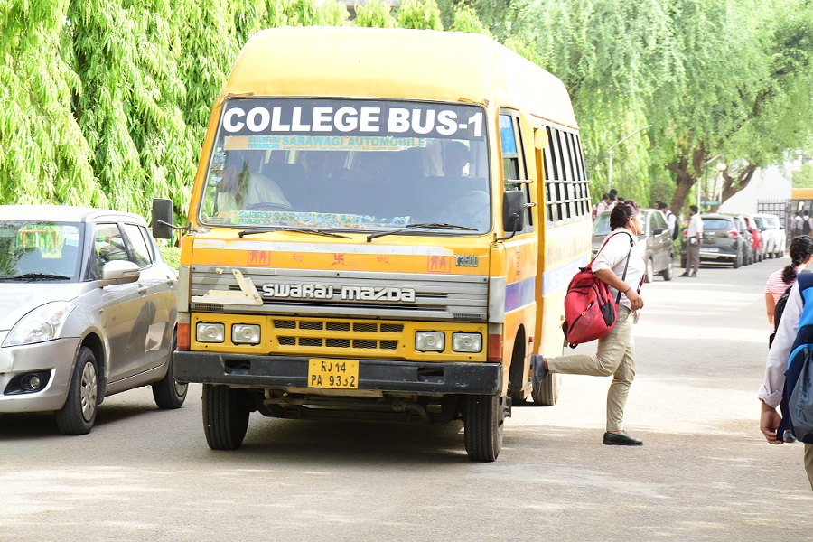

<!--
  Generated template for the StudentPage page.

  See http://ionicframework.com/docs/components/#navigation for more info on
  Ionic pages and navigation.
-->
<ion-header>

  <ion-navbar>
    <ion-title>WELCOME STUDENT</ion-title>
  </ion-navbar>

</ion-header>


<ion-content padding class="abc">
  <div >
    <div id="content" style="height: 50%" >
        <div id="left" class="t" style="width: 50%; float:left">
Know
<br>
YOUR
<br> 
BUS
<br> 
STOPPAGE
<br>
<br>
        </div>
      
        <div id="right" style="width: 50%; float:right">
          
          
        </div>
      </div>
      <br>
      
      <br>
      <ion-list>

        <ion-item>
          
      <ion-label>Enter your bus number</ion-label>
          <ion-input type="text" [(ngModel)]="Busno" required></ion-input>
        </ion-item>
      
        
      
      </ion-list>
      <br>
      <br>

      <button (click)="bustrack()" ion-button full>SEARCH</button>
    </div>
</ion-content>


<ion-footer class="bc">
  <ion-toolbar>
    <ion-title>@skit bus tracker</ion-title>
  </ion-toolbar>
</ion-footer>
